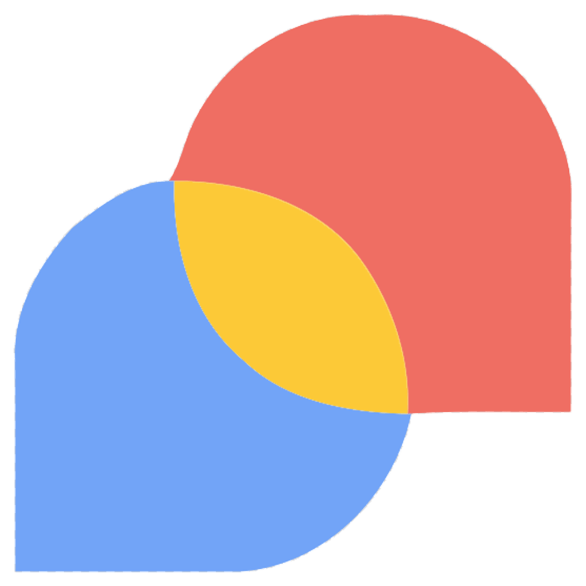

BotAI răspunde vizitatorilor site-ului tău la orice oră, politicos și la obiect, folosind doar informațiile de pe paginile tale. Nu trebuie să scrii nimic, nu trebuie să îl „înveți”: citește singur site-ul și e gata de lucru.
Vizitatorii au întrebări. Dacă nu primesc răspuns pe loc, pleacă. BotAI le răspunde în locul tău, exact cum ai face-o tu.
Seara, în weekend, de sărbători. Clienții primesc informația de care au nevoie fără să aștepte până a doua zi.
Program, prețuri, adresă, servicii, condiții. Întrebările care se repetă zilnic primesc răspuns automat, iar echipa ta rămâne liberă pentru ce contează.
Nu inventează. Dacă informația nu există pe site, o spune sincer și îndrumă vizitatorul să te contacteze.
Ai schimbat programul sau ai adăugat un serviciu nou pe site? BotAI observă și răspunde cu informația nouă, fără nicio intervenție.
Trei pași simpli. Tu nu trebuie să faci nimic tehnic.
BotAI parcurge paginile site-ului tău și reține tot ce este important: servicii, prețuri, program, adresă, întrebări frecvente.
Din paginile citite își face o bază de cunoștințe proprie, pe care o ține la zi automat, ori de câte ori site-ul se schimbă.
O bulă de chat discretă apare pe site. Vizitatorul întreabă, BotAI răspunde în limba lui și ține minte firul discuției.
Totul este gândit pentru vizitatorul tău și pentru tine, cel care administrează site-ul.
O bulă în colțul site-ului, în culorile tale. Se deschide la un clic, se poate mări, iar conversația rămâne acolo și dacă vizitatorul revine mai târziu.
Vizitatorul poate pune întrebarea cu vocea, iar răspunsul poate fi citit cu o voce naturală. Util pe telefon și pentru persoanele care preferă să nu tasteze.
Vizitatorul își poate trimite discuția pe email dintr-un singur clic, ca să aibă răspunsurile la îndemână mai târziu.
Română, engleză sau alte limbi: BotAI răspunde în limba în care i se scrie, chiar dacă site-ul tău este într-o singură limbă.
Toate conversațiile sunt păstrate în panoul tău de administrare. Afli ce îi interesează pe vizitatori și ce lipsește de pe site.
Îi spui cum să se prezinte, cât de formal să fie și la ce să insiste. Culorile, iconițele și textele bulei de chat se potrivesc cu site-ul tău.
Orice afacere care primește întrebări prin site. Câteva exemple din practică:
„Ce program aveți?”, „Cât costă o consultație?”, „Tratați și copii?”. Pacienții primesc răspuns imediat și știu cum să se programeze.
Servicii oferite, mărci acceptate, acte necesare, program. Clientul află tot înainte să sune sau să vină.
Condiții de livrare, retur, garanție, zone acoperite. Mai puține coșuri abandonate din cauza unei nelămuriri.
Fiecare site primește asistentul lui, cu informațiile lui, administrat dintr-un singur loc.
Nu ai nevoie de programator. Primești de la noi un cod scurt, de câteva rânduri, pe care îl adaugi în site sau ni-l lași nouă să îl adăugăm. Din acel moment, bula de chat apare pe toate paginile.
Ce ne întreabă de obicei clienții înainte să pornească.
Îți pregătim asistentul, îl testezi împreună cu noi și îl pornești când ești mulțumit. Fără angajamente înainte să îl vezi la lucru.